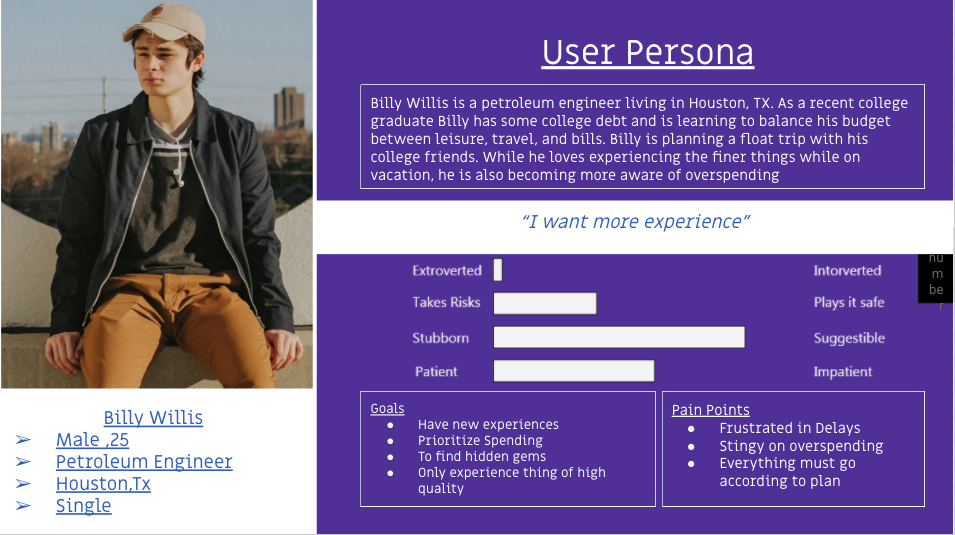
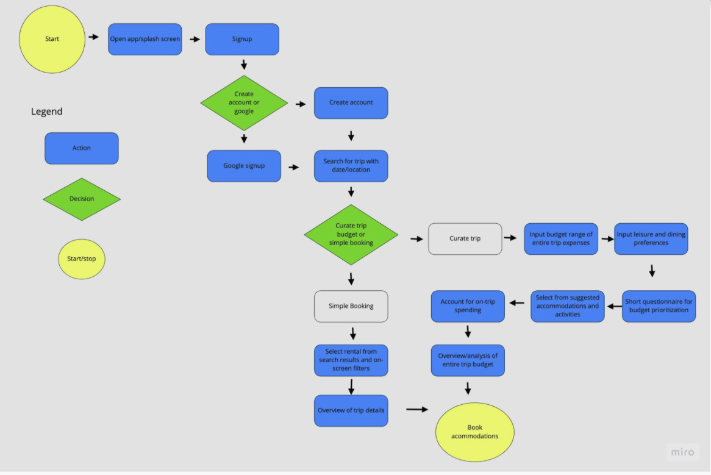
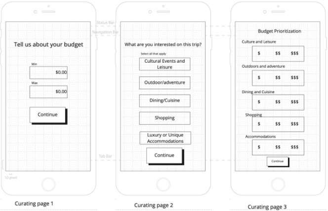
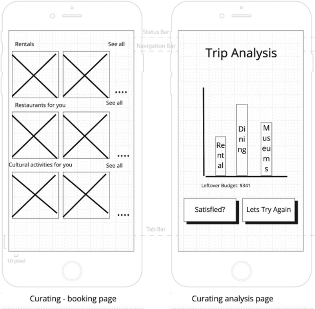
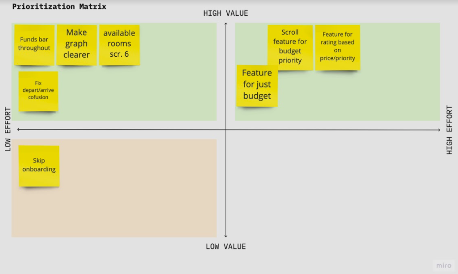

Let's Work Together!

ShoeString sets out to simultaneously solve a few common pain points that traveler's experience while planning their trip. ShoeString enhances travel by curating bookings and other itinerary items to match the your preferences with budgeting. The main objective of ShoeString to give its users assurance that they are getting the most for their money and their money is being spent on aspects of traveling that best suites their purposes.
Research for this project was split between myself and a partner, which concluded with the creation of a user persona. From this point we split and each created travel-solutions for our persona.
Survey's and interviews were conducted to create data from the following:
Our research suggested that people struggle to get the most out of their travel budgets.
“When I am looking for a place to stay I want value in a nice part of town that has the food and culture experience that I mostly travel for.” ~ Jordan, 27
“I personally believe your focus is to go outside , so I spend less money on lodging. Just enough to where I know the lodging is going to be clean and nice. If your main aim is to relax , you can spend more money on the hotel.” ~ Rahul, 33
The creation of an empathy map and user persona were used to help us empathize with the information that was collected during research. The primary goal here is the humanization of our collection of data. Interview and survey answers are turned into statements represented thoughts, feeling and actions and then into a relatable persona that represents the collection of our data points.
People need help prioritizing and organizing travel expenses so that their travel experiences may be more meaningful.
Travel's struggle to use their money on what is most valuable to them. Therefore, an application is needed that prioritizes budgeting that matches experience preferences.
Customize, prioritize and get the most out of your trip.
Two user pathways were created in a journey map. I felt that it would be important that this application could offer conventional booking accommodations as well as its key feature.
The bespoke feature the ShoeString platform is the allowance of prioritizing spending allowances configured by importance to the trip's function and the user's personal preferences. For example if dining is really important to a user, but lodging is less so they can set the configuration to balance their spending and list good options for both.
Next I create a low-fidelity prototype so that the concept could be tested.
The main objective of guerrilla testing was to determine if users understood the core concept of the application, could intuitively navigate their way through the user-flows and to discover areas of confusion and error.
After conducting guerrilla testing i analyzed the user feedback into a prioritization matrix. This allowed me to clearly decide which would be iterated upon.
ShoeString gives travelers what they need to prioritize their budget so that it matches what matters most to them.
Future iterations would emphasize the creation of a user review system that rates experience compared to expectation of the parameter settings. This would allow users to have extra reassurance in trusting ShoeString's fundamental process.